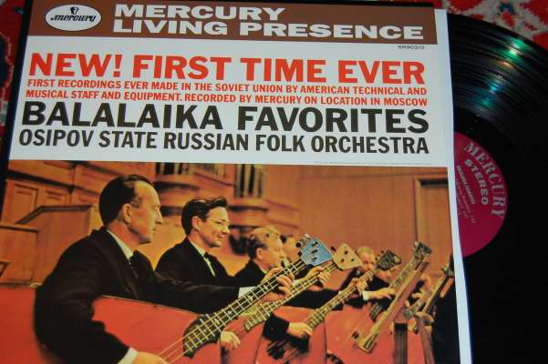
MERCURY SR90310 (Classic Rec. reissue)
Balalaika Favorites
Osipov State Russian Folk Orchestra
Sound eng. C.R. Fine & W.Cozart
This is a very good record. The music is something unusual, but the strange instruments used recreate a true slavish atmosphere. Do not miss the Rimski-Korsakov bumble-bee. Also in this record you can find the true MERCURY fast speed.
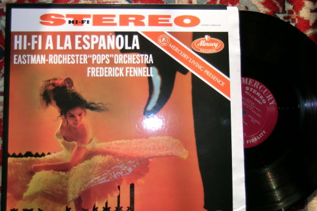
MERCURY SR90144 (Classic Rec. reissue)
AA.VV. “Hi-Fi a la Espanola” and others
Frederick Fennel Eastman-Rochester Pops Orch.
Sound eng. C.R. Fine & W.Cozart
This is probably one of the most wanted “Golden-Age” records, even if I don't like so much the musical program. But it is spectacular. I also have the feeling that the Classic Records reissue of the best Mercury have a superior sound with respect to the Speakers Corner ones.
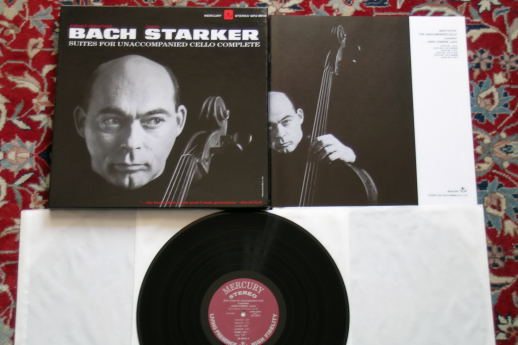
MERCURY SR3-9016 (Speakers Corner reissue)
J.S. Bach 6 cello suites
Janos Starker
Sound eng. C.R. Fine & W.Cozart
This is not my preferred interpretation of the Bach masterpiece (for me, one of the best music ever made) but it is a good one and it also has an audiophile sound. If you are more romantic listen the Fournier interpretation (DGG). If you are more filologic, have you tried the Wispelwey one (on CHANNEL)?
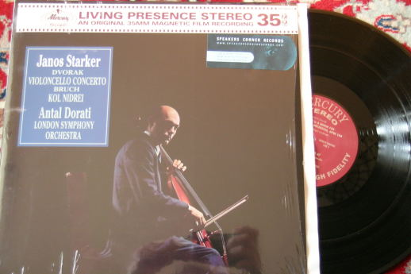
MERCURY SR90303 (Speakers Corner reissue)
Dvorak cello concerto +
Bruch “Kol Nidrei”
Antal Dorati London Symphony Orchestra
Sound eng. C.R. Fine & W.Cozart
This is probably the best version of this very beautiful concert. Great sound! Of course, also the Kol Nidrei is a wonderful piece...
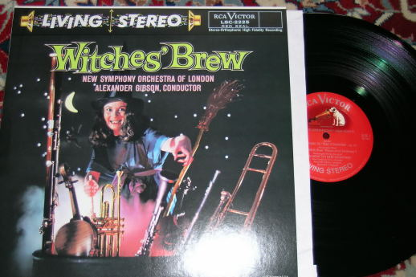
RCA LSC2225 (Classic Rec. reissue)
Arnold “Tam O'Shanter” (overture) +
Mussorgsky “Night on Bare mountain” +
Saint-Saens “Dance Macabre” + etc.
Alexander Gibson New Symphony Orchestra
Sound eng. A. Reeve & J. Walker (+Wilkinson help?)
This is one of the most famous audiophile record, in particular because of its “explosive” program.
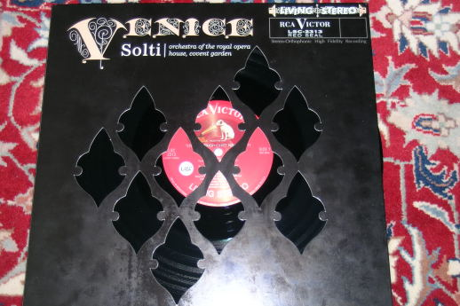
RCA LSC2313 (Classic Rec. reissue)
Verdi “Traviata” +
Ponchielli “Dance of the hours” + etc.
Sir Georg Solti Royal Opera House Orch.
Sound eng. K. J. Wilkinson
The very impressive “DECCA” soul in a RCA elegant body. Try to listen to the London metro toward the end of the first side...
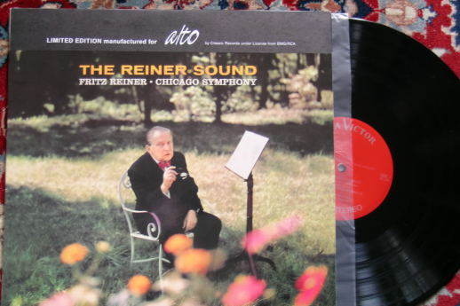
RCA LSC2183 (Classic Rec. Reissue)
Ravel “Rapsodie Espagnole” + Rachmaninoff “Isle of Dead”
Fritz Reiner Royal Chicago Symphony Orch.
Sound eng. ?
Another strong performance of Reiner very well recorded.
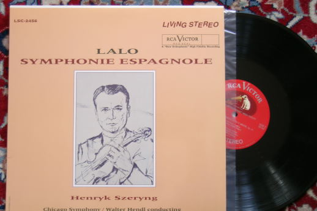
RCA LSC2456 (Classic Rec. Reissue)
Lalo Symphonie Espagnole
Henryk Szeryng
Walter Hendl Chicago Symphony Orchestra
Sound eng. ?
The sound of the orchestra is not recorded at its best but the Szeryng violin is someway magical. Listen carefully the second side and... enjoy!
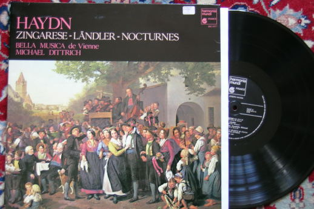
HARMONIA MUNDI FRANCE HM1057
Haydn “Zingarese-Landler-Nocturnes”
Michael Dittrich Bella Musica de Vienne
Sound eng. J.-F. Pontefract
I like very much the Zingarese sound!
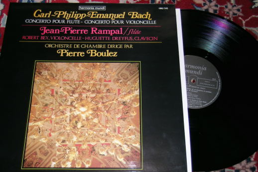
HARMONIA MUNDI FRANCE HMU545
CPE Bach flute and cello concertoes
Jean-Pierre Rampal, Robert Bex
Pierre Boulez Orchestre de Chambre
Sound eng. ?
A nice program well recorded.
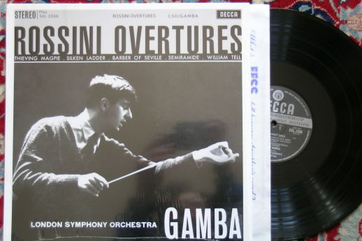
DECCA SXL2266 (Speakers Corner reissue)
Rossini Overtures
Pierino Gamba London Philharmonic Orch.
Sound eng. ?
I will be honest: I'm biassed with this record because it was one of my preferred when I was a child who played his father's records. Listen the William Tell overture and let me know!
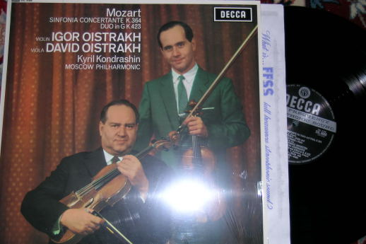
DECCA SXL6088 (Speakers Corner reissue)
Mozart Sinfonia Concertante + Duo KV423
David & Igor Oistrakh
Kyril Kondrashin Moscow Philharmonic
Sound eng. ?
Nice record! The Duo is very useful to understand if your system is able to distinguish between the violin and the viola sound.
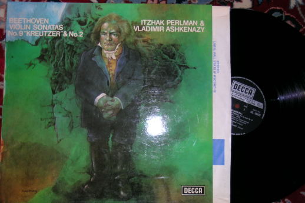
DECCA SXL6632 NB
Beethoven sonata “Kreutzer”
Itzhak Perlman & Vladimir Ashkenazy
Sound eng. K. J. Wilkinson
This is not a famous record, but -honestly- I can't find any good reason why it should not be included in this list!
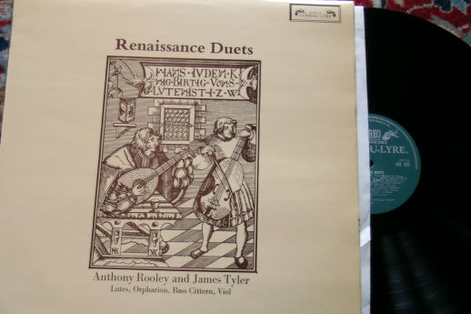
DECCA Oiseau Lyre SOL325
Renaissance Duets
Anthony Rooley and James Tyler
Sound eng. ?
I always prefer Decca L'oiseau Lyre to DGG Archiv records. This is a nice example of very well recorded lutes (1972).
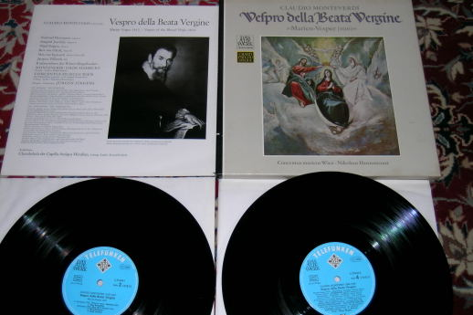
DECCA-Telefunken 6.35045-2
Monteverdi “Vespri della Beata Vergine”
Jurgen Jurgens Nikolaus Harnoncourt Concentus Musicus Wien
Sound eng. ?
This is a very nice box. A very good performance (on original instruments) well recorded.
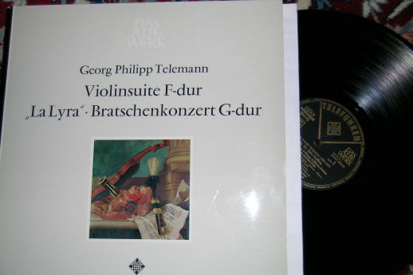
DECCA-Telefunken SAWT 9541 B
Telemann “La Lyra”
Frans Bruggen Concerto Amsterdam
Sound eng. ?
This is a wonderful old record. Some interpreters: Jaap Schroeder, Paul Doctor, Gustav Leonhardt, Frans Bruggen. I have found it NOS!
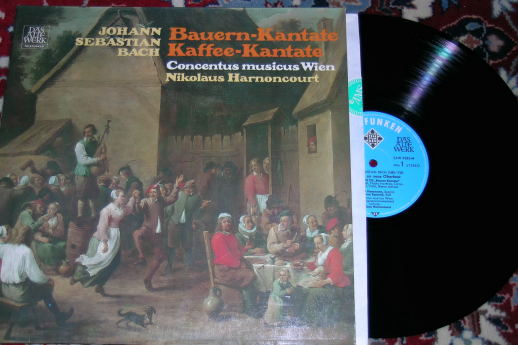
DECCA-Telefunken 6.35045-2
J. S. Bach cantate Peasant and Coffee
Nikolaus Harnoncourt Concentus Musicus Wien
Sound eng. ?
This is a enjoyable record.
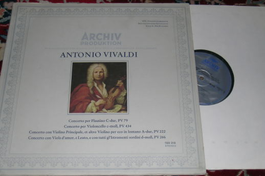
DGG Archiv 198318
Vivaldi concertoes
Wolfgang Hofmann Kammerorcheste Emil Seiler
Sound eng. H. Baudis
This is probably the best sounding Archiv that I have. The violin concerto “per eco lontano” is impressive.
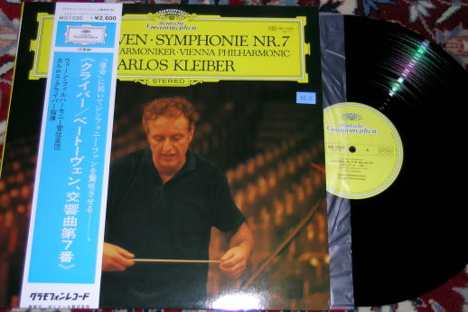
DGG MG1030 (Japan pressing)
Beethoven symphony n7
Carlos Kleiber Wiener Philharmonic Orchestra
Sound eng. K. Scheibe
Who said that DGG never did an audiophile-grade recording? Try to find the Japan pressing of this famous record (I have found it in a Frisco's used-records shop) and let me know. BTW, Carlos Kleiber is my favoured director (yes, I think he his the best one!). If you like this work try to listen also the Guido Cantelli (EMI) interpretation: the second movement will make you cry!
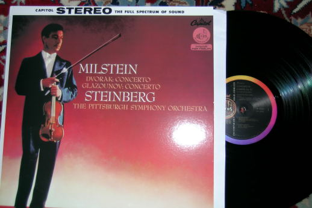
CAPITOL SP8382 (CISCO reissue)
Dvorak and Glazunov violin concertoes
Natain Milstein
Steinberg Pittsburg Symphony Orchestra
Sound eng. ?
A great performance of Milstein, well reissued by Cisco.
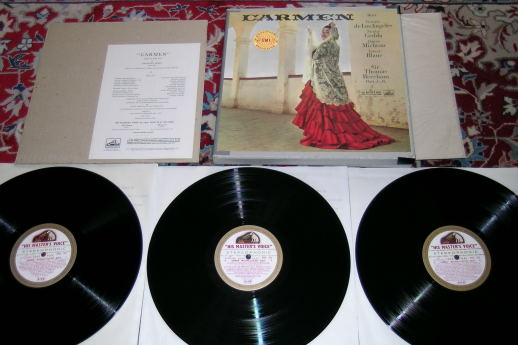
EMI ASD331-3
Bizet Carmen (complete)
Victoria de Los Angeles and Nicolai Gedda
Sir Thomas Beecham Orch. National de la Radiodifussion Francaise
Sound eng. ?
This Carmen has a really audiophile sound!
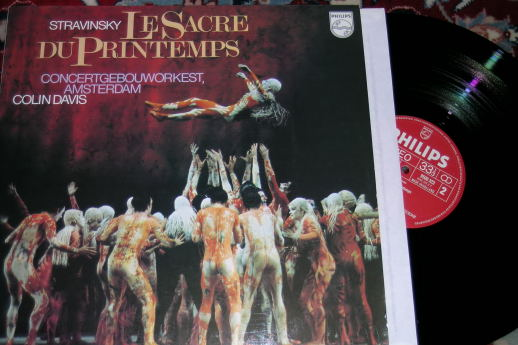
PHILIPS 9500323
Stravisnky “Le sacre du Printemps”
Colin Davis Concertgebow Orkest Amsterdam
Sound eng. ?
This recording is very well done, even if the instruments appear to be very large, like if you are in the middle of the orchestra. Great dynamic!
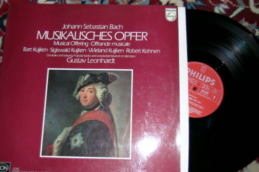
PHILIPS 6575043
J.S. Bach Musikalisches Opfer
Gustav Leonhardt
Sound eng. ?
The SEON records are the original instruments line of Philips. Usually they are recorded very well.

ASTREE
AS4
Marin Marais“Pieces de Viole du second Livre”
Jordi Savall, Anne Gallet and Hopkinson Smith
Sound eng. G. Kisselhoff
Yes, this is another “Follia”! This one was recorded some years before the Paniagua's more famous HMF record. But all the record is very nice, like all the Savall records made for the french Astreé label.

ASTREE
AS37
Music de Ioye
Hesperion XX Jordi Savall
Sound eng. T. Gallia
Thomas Gallia was a great sound engineer. He also pioneered the “sphere” microphone. He made a lot of EMI and Deutche Harmonia Mundi records, but I think his best results can be found in the Astreé catalogue. Here you can find an example of how well recorded are the Savall, Coin and Maurette violas, not to mention the other performers.
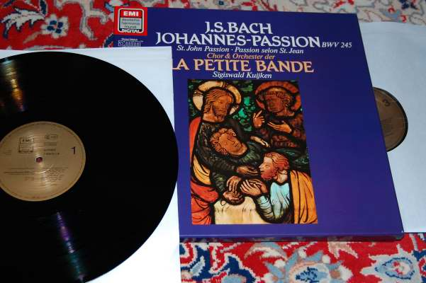
HARMONIA MUNDI - EMI 7496141 Digital DMM
J. S. Bach Johannes Passion BWV245
Sigiswald Kuijken La Petite Band
Sound eng. K. L. Neumann and T. Gallia
Who is scared by the digital wolf? One of his heir told me that this is one of the best recording ever made by Thomas Gallia and -actually- it is digital! The sound is really great, even if different from a great analogue sound. Most impressive are the soloists which simply “apparate” in my room.
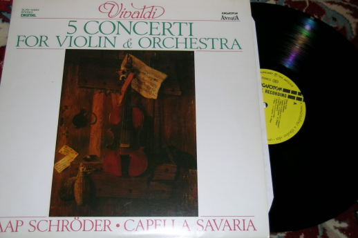
HUNGARATON SLPD12684 Digital
Vivaldi 5 violin concertos
Jaap Schroder Capella Savaria
Sound eng. F. Pécsi
Another very good digital record, this time from Hungaraton, who can believe? Schroder was one of the Telefunken star.

REFERENCE
RECORDING RR25
Liszt sonata in B min, Mephisto Waltz, La Campanella,...
Minoru Nojima
Sound eng. K. O. Johnson
Another great hit of RR, which obtained a true piano sound.

RCA
- CHESKY CR1
Berlioz Symphonie Fantastique
Massimo Freccia Royal Philharmonic
Sound eng. K. G. Wilkinson
Another great Wilkinson recording, the first reissued by the Chesky brothers.

Pierre
VERANY 8222
Soler, Albero, Ferrer, De Nebra
Jean-Marie Puli
Sound eng. ?
The most audiophile cembalo I have ever heard. Note that the cembalo is quite a difficult instrument to be listened from an audio system, while it is not when you listen it in live concertos. So a good cembalo record is also a very useful audio test.

TACET
L74
Corelli, Biber, Vivaldi, Boccherini and Sammartini
Stuttgarter Kammerorchester
Sound eng. A. Spreer, R. Kistner
Impressive sound. I like very much the Boccherini “Ritirata per le vie di Madrid”.
Updated April 2007
To be continued?